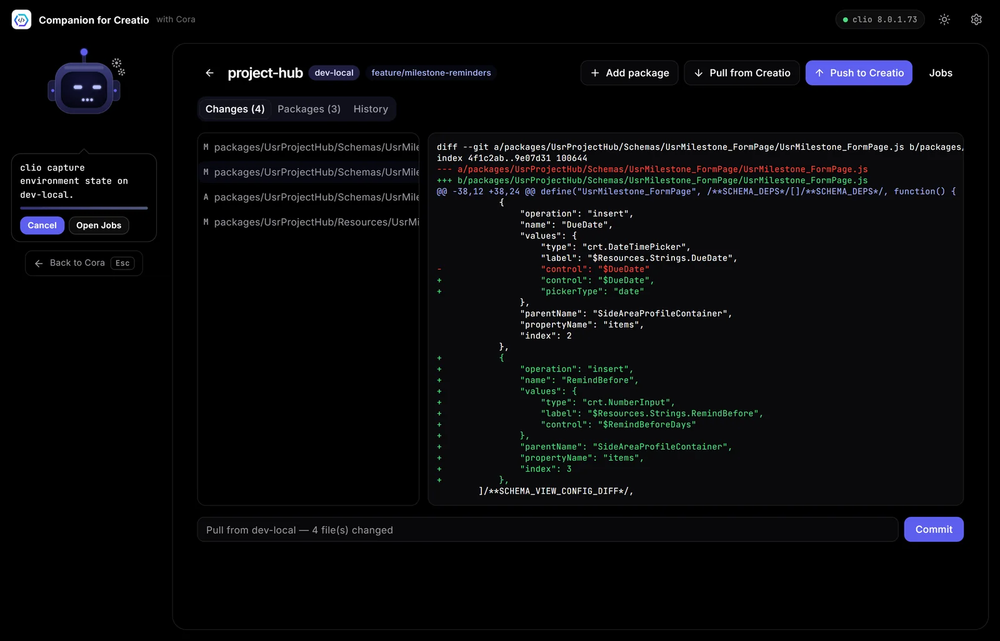

How to put Creatio packages in Git and GitHub
Creatio keeps packages in its database, so first get their source onto disk with a clio workspace: clio create-workspace -e dev, then clio restore-workspace -e dev after each change. Commit the folder with Git, push it to GitHub (for example gh repo create --private --source . --push), and install from the repository with clio push-workspace -e test.
Creatio stores your packages in its database, which makes ordinary source control awkward: there is no folder to commit. Without it, you can't see what changed between two deploys, review a colleague's work, or rebuild an environment after a bad day. A clio workspace fixes that by giving your packages a folder on disk that Git can track.
What you need
- clio (
dotnet tool install clio -g), Git, and the GitHub CLI (gh) signed in withgh auth login. - A registered environment (
clio reg-web-app dev -u ... -l ... -p ...). - cliogate 2.0.0.0 or newer on that environment, which the workspace commands require:
clio install-gate -e dev. The install restarts Creatio.
1. Create the workspace
mkdir orders-app && cd orders-app
clio create-workspace -e devConnected to an environment, create-workspace downloads its editable packages and records them in .clio/workspaceSettings.json. It also creates a MainSolution.slnx for your IDE. To start without connecting anywhere, use clio create-workspace orders-app --empty.
2. Commit and publish to GitHub
git init
git add .
git commit -m "Initial import of Creatio packages"
gh repo create orders-app --private --source . --pushKeep the repository private unless the code is meant to be public. Add build output folders such as bin/ and obj/ to .gitignore before your first commit.
3. The daily loop
Work in Creatio as usual, then bring the changes back to disk, review them and commit:
clio restore-workspace -e dev
git diff
git commit -am "Add delivery type to orders"
git pushrestore-workspace (alias pullw) downloads the packages listed in the workspace settings. git diff is now your code review: you see exactly which schemas changed.
4. Deploy from the repository
On another machine, or a build server, clone the repository and install it into an environment:
git clone https://github.com/your-org/orders-app.git && cd orders-app
clio push-workspace -e testpush-workspace (alias pushw) packs every package in the workspace and installs them. It creates a backup first unless you pass --skip-backup true. Before installing it also checks package folders: a folder under Schemas/ or Data/ without a descriptor.json stops the push, because Creatio would reject the whole install.
The same command is your recovery plan: if an environment is broken by a bad change, push the last good commit back into it.
Good habits
- One workspace per application, so a repository maps to something you deploy together.
- A branch per change, merged after review, so
mainis always deployable. - Never commit environment URLs with passwords. clio keeps credentials in its own settings, outside the workspace.
- For local-only development, Creatio's file system mode (
clio turn-fsm -e local on) keeps packages on disk on that instance. A workspace is still the simpler way to share work through Git.
The one-window way
Companion for Creatio wraps this loop in a Workspaces screen. New workspace creates one, empty or seeded from packages; inside it, Pull from Creatio refreshes the source, the Changes tab shows every modified file with its diff and a commit box, and the History tab lets you create or pick a GitHub repository (private by default) and push. Deploy from GitHub clones a repository and installs it into an environment, which is how you restore a broken one.

Companion for Creatio is a free desktop app for Windows and macOS that runs these clio steps for you, as jobs you can watch and cancel.